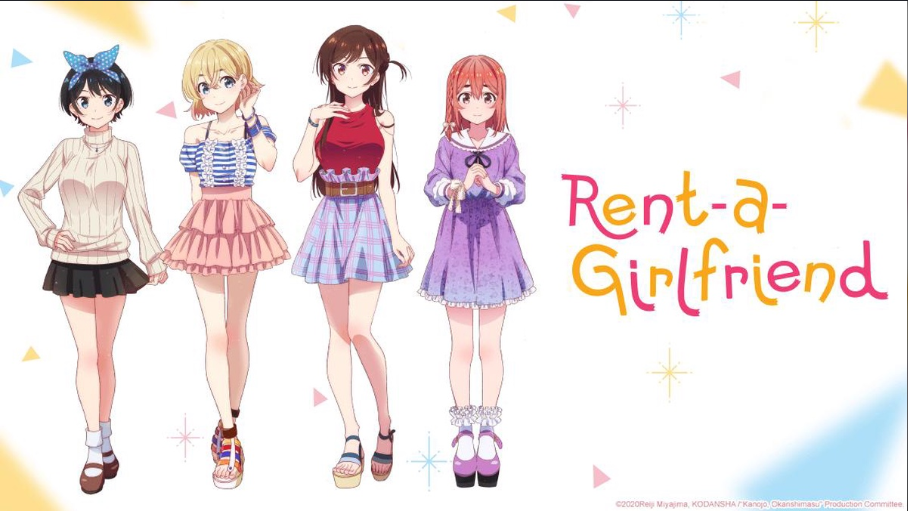
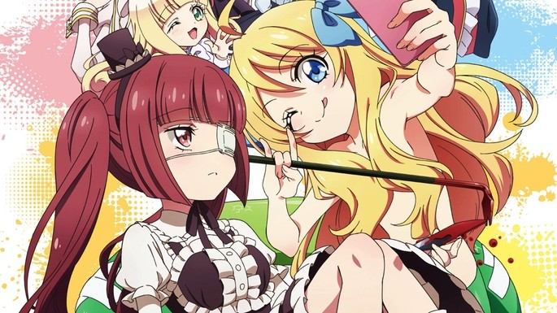
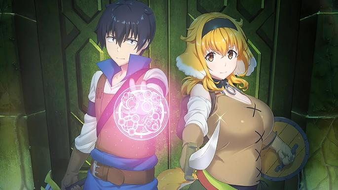
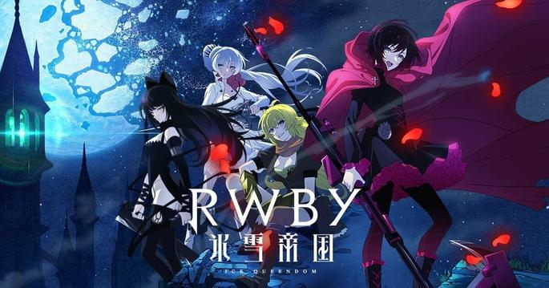
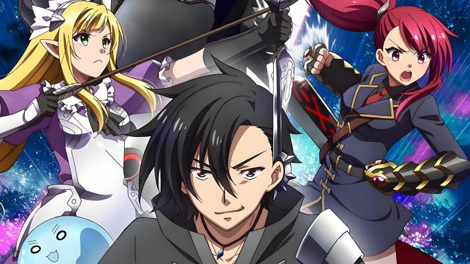

Todas las noticias de la actualidad
Estrenos verano 2022
Kanojo, Okarishimasu 2nd Season
Fecha de estreno: 2 de julio 2022
Género: Comedia, Romance
Overlor IV

Fecha de estreno: 5 de Julio 2022
Género: Acción, Fantasía, Sobrenatural
Made in Abyss: Retsujitsu no Ougonkyou

Fecha de estreno: 6 de julio 2022
Género: Aventura, Drama, Fantasía, Misterio, Ciencia Ficción
Secuela que relata los sucesos luego de la tercera película de la serie.
Dungeon ni Deai wo Motomeru no wa Machigatteiru Darou ka IV: Shin Shou

Fecha de estreno: 4 de julio 2022
Género: Acción, Aventura, Comedia, Fantasía, Romance
Segunda temporada de Classroom of the Elite.
Classroom of the Elite Season 2

Fecha de estreno: 23 de julio 2022
Cuarta temporada de Danmachi.
Orient: Awajishima Gekitou-hen

Fecha de estreno: 12 de julio 2022
Género: Acción, Fantasía
Segunda temporada de Orient, que adapta el arco de la batalla en la isla Awaji.
Jashin-chan Dropkick X
Fecha de estreno: 6 de julio 2022
Género: Comedia, Sobrenatural
Tercera temporada de Jashin-chan Dropkick.
Tensei Kenja no Isekai Life: Dai-2 no Shokugyou wo Ete, Sekai Saikyou ni Narimashita

Fecha de estreno: 4 de julio 2022
Género: Acción, Aventura, Comedia, Fantasía, Romance
Yuuji Sano, un oficinista, es llevado a otro mundo un día cuando trabajaba en casa. Su profesión en el otro mundo es la de un
entrenador de monstruos, y es difícil convertirse en aventurero con esa vocación. Pero gracias a un grupo de slimes, que han
leído libros mágicos, gana poderes para obtener una nueva profesión, la de Sabio. Yuuji adquiere un poder sin paralelo, pero
¿cómo manejar esa fuerza?
Isekai Meikyuu de Harem wo
Fecha de estreno: 6 de julio 2022
Género: Acción, Aventura, Fantasía, Romance, Ecchi
Tercera temporada de Jashin-chan.
Michio es un joven que no tiene vida social y al que la sociedad juzga muy duramente.
Un día, descubre un sitio web extraño que le permite crear un personaje basado en un sistema de puntos y un cuestionario.
Luego de crear el suyo, es transportado a otro mundo, donde su personaje es capaz de enamorar a las mujeres más hermosas.
RWBY: Hyousetsu Teikoku
Fecha de estreno: 3 de julio 2022
Género: Acción
Versión anime de la popular animación americana RWBY.
Engage Kiss

Fecha de estreno: 3 de julio 2022
Género: Comedia, Romance
En una metrópolis artificial se desarrolla una complicada relación entre tres personas.
Shuu es un joven que tiene un negocio pequeño en el área, pero gasta más dinero de lo que gana.
Y en su vida están Kisara y Ayame, dos chicas que se preocupan por él, ¿pero bajo qué premisa?
¿Quieren algo más de Shuu?
Kuro no Shoukanshi
Fecha de estreno: 9 de julio 2022
Género: Acción, Fantasía
Kelvin acaba de descubrir que los recuerdos de su vida anterior han sido borrados gracias a una apuesta.
Pero ahora tiene grandes poderes, así que decide batallar para probarlos. El único inconveniente es que,
luego de esta batalla, descubre que es un adicto a las luchas...
Lycoris Recoil

Fecha de estreno: 2 de julio 2022
Género: No disponible
Este café de Japón se puede encargar de mucho: servir deliciosos postres y bebidas, entregas a domicilio y eliminar zombies,
monstruos gigantes y más. ¿Tienes un problema? ¡Llámalos!